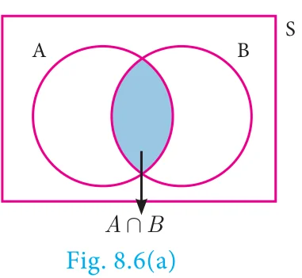
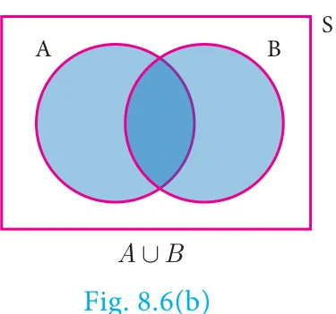
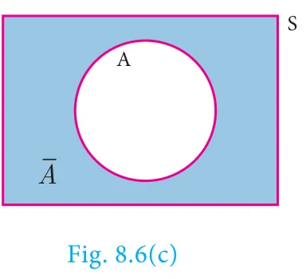
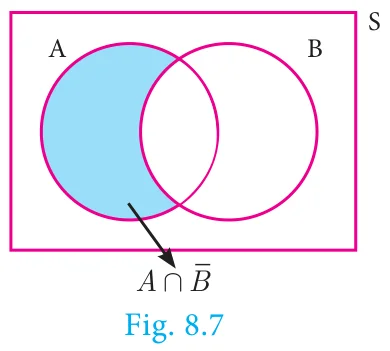
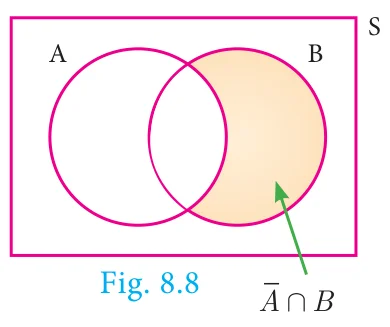

8.5 Algebra of Events
In a random experiment, let S be the sample space. Let \(A \subseteq S\) and \(B \subseteq S\) be the events in S. We say that
- \((A \cap B)\) is an event that occurs only when both \(A\) and \(B\) occurs.

- \((A \cup B)\) is an event that occurs when either one of \(A\) or \(B\) occurs.

- \(\overline{A}\) is an event that occurs only when \(A\) doesn’t occur.

Note
- \(A \cap \overline{A} = \phi\)
- \(A \cup \overline{A} = S\)
- If \(A, B\) are mutually exclusive events, then \(P(A \cup B) = P(A) + P(B)\)
- \(P(\text{Union of mutually exclusive events}) = \sum (\text{Probability of events})\)
Theorem 1
If \(A\) and \(B\) are two events associated with a random experiment, then prove that

- \(P(A \cap \overline{B}) = P(\text{only } A) = P(A) - P(A \cap B)\)
- \(P(\overline{A} \cap B) = P(\text{only } B) = P(B) - P(A \cap B)\)
Proof
(i) By Distributive property of sets,
- \((A \cap B) \cup (A \cap \overline{B}) = A \cap (B \cup \overline{B}) = A \cap S = A\)
- \((A \cap B) \cap (A \cap \overline{B}) = A \cap (B \cap \overline{B}) = A \cap \phi = \phi\)
Therefore, the events \(A \cap B\) and \(A \cap \overline{B}\) are mutually exclusive whose union is \(A\).
\[\begin{aligned} \text{Therefore,} \quad P(A) &= P[(A \cap B) \cup (A \cap \overline{B})] \\ P(A) &= P(A \cap B) + P(A \cap \overline{B}) \\ \text{Therefore,} \quad P(A \cap \overline{B}) &= P(A) - P(A \cap B) \\ \text{That is, } P(A \cap \overline{B}) = P(\text{only } A) &= P(A) - P(A \cap B) \end{aligned}\]

(ii) By Distributive property of sets,
- \((A \cap B) \cup (\overline{A} \cap B) = (A \cup \overline{A}) \cap B = S \cap B = B\)
- \((A \cap B) \cap (\overline{A} \cap B) = (A \cap \overline{A}) \cap B = \phi \cap B = \phi\)
Therefore, the events \(A \cap B\) and \(\overline{A} \cap B\) are mutually exclusive whose union is \(B\).
\[\begin{aligned} P(B) &= P[(A \cap B) \cup (\overline{A} \cap B)] \\ P(B) &= P(A \cap B) + P(\overline{A} \cap B) \\ \text{Therefore,} \quad P(\overline{A} \cap B) &= P(B) - P(A \cap B) \\ \text{That is, } P(\overline{A} \cap B) = P(\text{only } B) &= P(B) - P(A \cap B) \end{aligned}\]
Progress Check
- \(P(\text{only } A) =\) ________.
- \(P(\overline{A} \cap B) =\) ________.
- \(A \cap B\) and \(\overline{A} \cap B\) are _______ events.
- \(P(\overline{A} \cap \overline{B}) =\) ________.
- If \(A\) and \(B\) are mutually exclusive events then \(P(A \cap B) =\) _______.
- If \(P(A \cap B) = 0.3,\ P(\overline{A} \cap B) = 0.45\) then \(P(B) =\) _______.